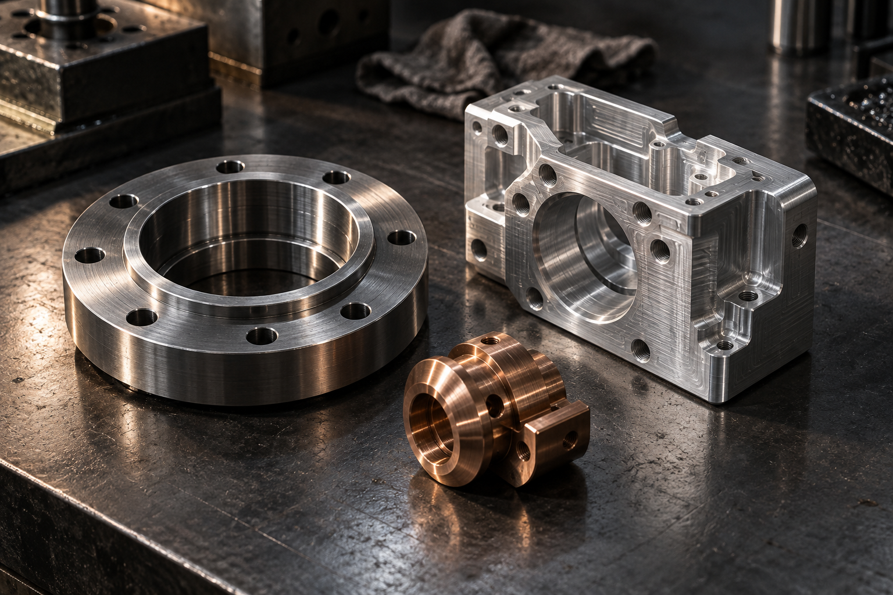

01MACHINING
ماشینکاری
بررسی ساخت قطعات تراشکاری و فرزکاری بر اساس نقشه، ابعاد، جنس و تلرانسهای موردنیاز.
تراشکاریفرزکاریقطعات سفارشی

ژوپین بارب، برند آسو همراه هوشمند در حوزه تولید قطعات فلزی است. برای هر درخواست، نقشه یا نمونه و نیاز پروژه بررسی میشود تا درباره امکان ساخت و شرایط همکاری گفتوگو کنیم.
ژوپین بارب / قطعات فلزی
جنس، هندسه، تعداد و تلرانس، تصمیم درباره روش تولید را شکل میدهند. به همین دلیل آغاز همکاری با شناخت دقیق نیاز قطعه است؛ سپس درباره مسیر ساخت، زمانبندی و شرایط پروژه تصمیمگیری میشود.
این وبسایت برای آشنایی با حوزه فعالیت و شیوه شروع همکاری طراحی شده است. جزئیات اجرایی و امکان ساخت هر قطعه پس از بررسی مدارک همان پروژه مشخص میشود.
CAPABILITIES / حوزههای ساخت
درخواستهای ساخت متناسب با مشخصات فنی و تعداد موردنیاز بررسی میشوند. روش نهایی اجرا پس از ارزیابی پروژه اعلام خواهد شد.
بررسی ساخت قطعات تراشکاری و فرزکاری بر اساس نقشه، ابعاد، جنس و تلرانسهای موردنیاز.
بررسی ساخت بدنه، براکت و سایر قطعات ورقی با توجه به ضخامت، فرم نهایی و نیاز مونتاژ.
بررسی امکان ساخت از روی نقشه یا نمونه و انتخاب مسیر مناسب تولید متناسب با کاربرد قطعه.
دامنه خدمات و امکان اجرا برای هر پروژه، پس از دریافت مشخصات فنی و توافق درباره شرایط آن تعیین میشود.
WORKFLOW / از درخواست تا اجرا
پیش از شروع ساخت، باید بدانیم چه قطعهای با چه مشخصاتی موردنیاز است. این گفتوگو مبنای بررسی و توافق بر شرایط کار خواهد بود.
چه اطلاعاتی آماده کنیم؟کاربرد قطعه، نقشه یا نمونه، تعداد و زمان مدنظر را با ما مطرح کنید.
جنس، ابعاد، ویژگیهای ساخت و نکات حساس پروژه بررسی میشود.
در صورت امکان اجرا، درباره روش ساخت، هزینه و زمانبندی توافق میکنیم.
کار بر اساس مشخصات و شرایط تأییدشده پیگیری و تحویل میشود.
PROJECT INPUTS / اطلاعات پروژه
اگر هنوز همه جزئیات آماده نیست، با اطلاعات موجود تماس بگیرید. موارد زیر کمک میکنند درخواست شما سریعتر و دقیقتر بررسی شود.
تماس برای بررسی پروژهنقشه، فایل ابعادی یا تصویر واضح از قطعه و کاربرد آن.
متریال موردنظر، تعداد موردنیاز و سفارشهای احتمالی بعدی.
ابعاد حساس، تلرانسها، پرداخت سطح و نیاز احتمالی به مونتاژ.
مهلت مورد انتظار برای نمونه یا تحویل قطعات.
ABOUT / آسو همراه هوشمند
ژوپین بارب نام تجاری فعالیت در حوزه قطعات فلزی است. اطلاعات حقوقی و نشانی شرکت برای ارتباط و بررسی همکاری در این بخش آمده است.
CONTACT / شروع گفتوگو
برای مطرح کردن درخواست ساخت یا پرسیدن درباره امکان همکاری با ژوپین بارب تماس بگیرید.
۰۹۱۲۲۱۶۴۸۳۶